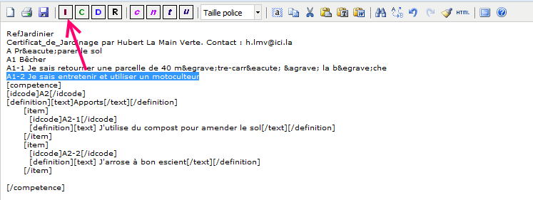
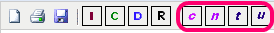
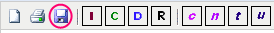

Programmé par JF - Basé sur TinyMCE.
Pour que la conversion opère correctement il est indispensable de respecter quelques règles syntaxiques
Exemple
RefJardinier Certificat_de_Jardinage par Hubert La Main Verte. Contact : h.lmv@ici.la A Préparer le sol A1 Bêcher A1-1 Je sais retourner une parcelle de 40 mètre-carré à la bèche A1-2 Je sais entretenir et utiliser un motoculteur A2 Apports A2-1 J'utilise du compost pour amender le sol A2-2 J'arrose à bon escient etc.
Procéder en remontant de la fin du texte vers le début

Au final on obtient une structure sur ce modèle
[referentiel]
[idcode]RefJardinier[/idcode]
[name]NOM_A_VALIDER: Certificat_de_Jardinage[/name]
[definition][text]par Hubert La Main Verte. Contact : h.lmv@ici.la[/text][/definition]
[domaine]
[idcode]A[/idcode]
[definition][text]Préparer le sol[/text][/definition]
[competence]
[idcode]A1[/idcode]
[definition][text]Bêcher[/text][/definition]
[item]
[idcode]A1-1[/idcode]
[definition][text] Je sais retourner une parcelle de 40 mètre-carré à la bèche[/text][/definition]
[/item]
[item]
[idcode]A1-2[/idcode]
[definition][text] Je sais entretenir et utiliser un motoculteur[/text][/definition]
[/item]
[/competence]
[competence]
[idcode]A2[/idcode]
[definition][text]Apports[/text][/definition]
[item]
[idcode]A2-1[/idcode]
[definition][text] J'utilise du compost pour amender le sol[/text][/definition]
[/item]
[item]
[idcode]A2-2[/idcode]
[definition][text] J'arrose à bon escient[/text][/definition]
[/item]
[/competence]
[/domaine]
etc.
[/referentiel]
En cas de nécessité on peut retoucher le texte avec les outils

Cliquer sur le bouton "Save" pour convertir le référentiel dans le format XML du module Référentiel de Moodle.

Lors de la conversion les valeurs ci-après sont utilisées :
<?xml version="1.0" encoding="UTF-8"?>
<referentiel>
<idcode>RefJardinier</idcode>
<name>Certificat_de_Jardinage</name>
<definition><text>par Hubert La Main Verte. Contact : h.lmv@ici.la</text></definition>
<domaine>
<idcode>A</idcode>
<definition><text>Préparer le sol</text></definition>
<competence>
<idcode>A1</idcode>
<definition><text>Bêcher</text></definition>
<item>
<idcode>A1-1</idcode>
<definition><text> Je sais retourner une parcelle de 40 mètre-carré à la bèche</text></definition>
</item>
<item>
<idcode>A1-2</idcode>
<definition><text> Je sais entretenir et utiliser un motoculteur</text></definition>
</item>
</competence>
<competence>
<idcode>A2</idcode>
<definition><text>Apports</text></definition>
<item>
<idcode>A2-1</idcode>
<definition><text> J'utilise du compost pour amender le sol</text></definition>
</item>
<item>
<idcode>A2-2</idcode>
<definition><text> J'arrose à bon escient</text></definition>
</item>
</competence>
</domaine>
</referentiel>
Le fichier a l'extension "_sxml.xml" qui permet de le distinguer des référentiels exportés depuis le module référentiel de Moodle.